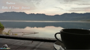

Sur les traces de nos rêves
"Je n'ai pas été partout, mais c'est sur ma liste." Auteur?

Sur ce site vous trouverez mes carnets de voyage, souvenirs extraordinaires en mot et en images.........Nunc viverra pharetra dui, ac ultricies quam tristique et. Quisque suscipit lectus quis tellus imperdiet, sit amet lacinia ante imperdiet. Phasellus lobortis erat metus, vitae molestie purus accumsan nec. Ut eros orci, finibus porta ante nec, finibus blandit velit. Aenean sit amet quam at nulla gravida dapibus. Proin dapibus lectus a nibh vehicula varius. In laoreet, felis ut efficitur rhoncus, dui dui vestibulum purus, quis auctor lectus ex sed mi. Mauris posuere magna in congue tristique. In blandit efficitur justo, ac laoreet arcu sollicitudin eu. Donec porta est et magna vehicula, et vehicula erat posuere. Donec mollis purus aliquam, sagittis orci et, posuere erat. Donec vel bibendum enim. Nunc lacinia arcu vitae enim dapibus aliquam. Nunc finibus diam quis risus laoreet, a vehicula urna ornare. Mauris hendrerit maximus justo ac feugiat. Sed dolor arcu, fermentum vel ligula sed, interdum consectetur erat. Pellentesque habitant morbi tristique senectus et netus et malesuada fames ac turpis egestas. In hac habitasse platea dictumst. Etiam fermentum pulvinar enim ac rutrum. Nunc porta velit risus, et lobortis velit volutpat sit amet. Sed volutpat ullamcorper dignissim. Fusce urna ipsum, laoreet non tincidunt sed, feugiat vel ipsum. Curabitur id neque in risus interdum facilisis auctor vel risus. Etiam interdum mi in nulla rhoncus, vel facilisis quam gravida.
Sed dolor arcu, fermentum vel ligula sed, interdum consectetur erat. Pellentesque habitant morbi tristique senectus et netus et malesuada fames ac turpis egestas. In hac habitasse platea dictumst. Etiam fermentum pulvinar enim ac rutrum. Nunc porta velit risus, et lobortis velit volutpat sit amet. Sed volutpat ullamcorper dignissim. Fusce urna ipsum, laoreet non tincidunt sed, feugiat vel ipsum. Curabitur id neque in risus interdum facilisis auctor vel risus. Etiam interdum mi in nulla rhoncus, vel facilisis quam gravida.